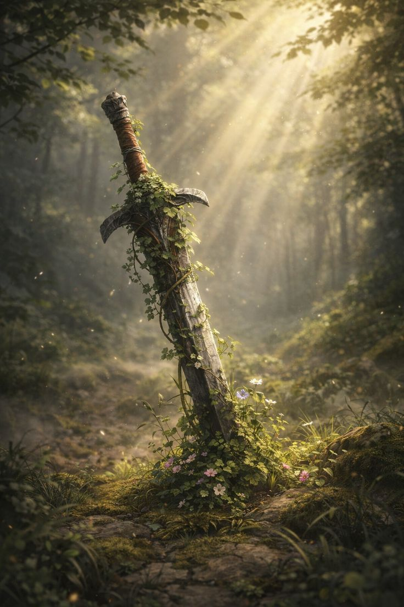

You see it before he does — a fraction of a second where his guard shifts, where the weight of the duel has finally cost him more than it has cost you. Your blade finds the gap.
The Usurper does not fall dramatically. He staggers. He catches himself against the throne — your throne — and then his legs give way and he slides to the floor at its base. The hall is perfectly silent.
Then someone kneels. Then another. Then the whole room, one by one, like a slow tide pulling back to shore.
You stand there with blood on your hands and a crown that has not yet been placed back on your head, and you feel something you did not expect: not triumph, exactly, but the particular exhaustion of a long thing finally being over.
There is much work ahead. Courts to convene, loyalties to confirm, a kingdom to stitch back together from the damage of years beneath the Usurper's reign. None of that is simple. None of it will be fast.
But the hall is kneeling. The throne is yours. You earned it today not by birthright, but by blood and will and the refusal to yield when yielding would have been so much easier.
The crown is restored. And this time, you will not let it fall.
